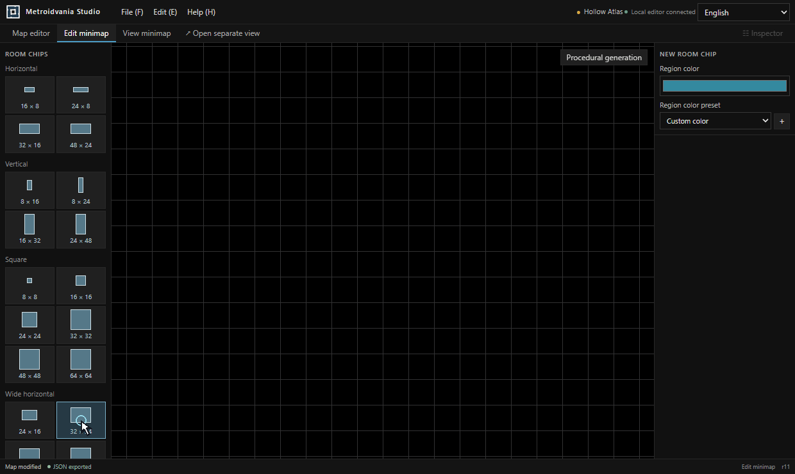

Minimap design
Each chip in Edit minimap places one room. You can lay out an entire world here, then switch to Map editor to see its room boundaries. Positions, dimensions and region colors carry across both tabs.
Place a route and see its outline
- Open Edit minimap. Pick a chip from the left palette. Its label gives the width and height in map tiles.
- Under New room chip, choose a region color. Move the pointer over the grid to preview the outline, then click once per room. Place the next chip against a wall to open a passage. A corner contact leaves both walls closed.
- Mix horizontal corridors, vertical shafts and square chambers. Change the region color when the route branches into a new area. View minimap frames the whole layout so you can trace the connections.
- Double-click a room in either minimap tab to open it in Map editor, or switch directly from Edit minimap to Map editor to focus the selected room. Click Fit map to see every room at once. For a clean outline view, turn off Grid and Room names. A newly placed room has empty foreground and background tile layers.

Generate a minimap
In Edit minimap, click Procedural generation in the upper-right corner of the grid. Choose Save and continue to keep the current map, or Continue without saving to go straight to the settings. You can cancel the settings and keep editing the current layout.
Enter a Room count from 1 to 1,024 and click Generate minimap. By default, the generator uses the full chip palette and assigns region colors automatically. To make a world of narrow shafts, choose Use only selected chips and pick vertical sizes. To keep everything except a few shapes, choose Exclude selected chips. Under Region color, choose Choose from presets to set the colors yourself. Each chosen color forms a connected region.
Random seed is checked by default. Clear it to enter a numeric Seed. The same seed, room count, chips and color settings reproduce the same layout and regions. The map stores its seed, so clearing Random seed the next time you open the dialog recalls it.
The new layout opens in Edit minimap. Switch to Map editor to see the whole layout as empty room outlines, or double-click a room to work on it.
Adjust a room
Choose from 34 chip sizes, including squares, wide rooms and long shafts. The grid uses smaller subdivisions when an existing room needs them. In Starter World, the 14-tile-wide Lift Shaft and the 18-tile-high Landing fit the two-tile grid.
Drag a room to move it. A red dashed preview marks an overlap, and releasing there keeps the original layout. Right-click an unlocked room to delete it immediately. Ctrl+Z restores the room and its contents. To change its dimensions, open it in Map editor and use the inspector. Room layout
Place chips with the CLI or MCP
The 102-room batch from the demo rebuilds all six regions on an empty map. It requires the minimap.place operation introduced in 1.3.3. Build the CLI using the source instructions. From the repository root, the following PowerShell commands use that local build to create a separate demo workspace.
$cli = "./metroidvania-studio/cli/bin/Release/net10.0/MetroidvaniaStudio.Cli.dll"
$workspace = "./.local/minimap-demo"
New-Item -ItemType Directory -Force $workspace | Out-Null
Copy-Item ./docs/examples/minimap-world.json $workspace
dotnet $cli init --workspace $workspace --map world.map.json
dotnet $cli apply --workspace $workspace --map world.map.json --batch minimap-world.json
dotnet $cli preview --workspace $workspace --map world.map.json --output world.svgTo place chips in the open editor, start the editor and MCP server from the 1.3.3 release ZIP or source build and connect using the editor URL. Check that studio_capabilities lists minimap.place. Call studio_inspect with map: "@active", then pass its revision as expectedRevision to studio_apply. Set batch to the contents of the example or to a batch of your own. Each minimap.place creates one room. Ctrl+Z in the editor undoes the whole batch. MCP call example
Room colors
The color under New room chip applies to the next rooms you place. To recolor an existing room, select it and use the color control beneath its name. Choose a project palette color from Region color preset, or pick a color and use + to save a named preset in this browser. The Map editor inspector offers the same presets.
Navigate and edit
Middle-drag to pan and use the wheel to zoom. In View minimap, use Fit map, Frame room or the room names toggle to find a room in a large layout.
Outlines and entrances
View minimap has separate Outline and Entrance length controls. Their defaults are 9 and 15. Both scale with zoom. Unselected room interiors dim so the white walls and entrances remain easy to follow. To change which rooms meet, move a room in Edit minimap.
Try a complete world
The sample world walkthrough follows the route through Landing, Canopy, Lift Shaft, Sky Bridge and Lookout before you extend it.